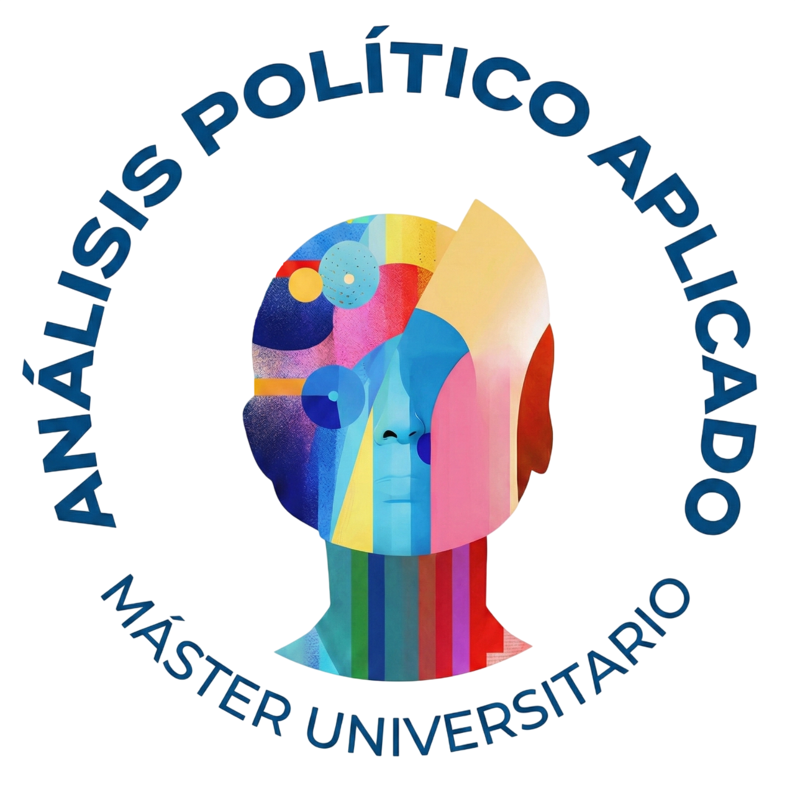

Próximo Curso Académico (2026-2027)
Doctorado y Máster de Métodos Avanzados de Investigación
Línea de investigación: Comunicación Política, Campañas y Elecciones
Especialización en el impacto y uso de la Inteligencia Artificial (IA) por parte de los partidos políticos, abarcando áreas de comunicación estratégica, creación de spots electorales y nuevas formas de gobernanza. Paralelamente, profundización técnica para elevar el rigor y la precisión en la investigación sociológica y el análisis de datos complejos.
Formación Académica e Investigación
Máster en Análisis Político Aplicado
Universidad de Murcia (UMU)
Rendimiento académico sobresaliente a nivel global. Obtención de Matrícula de Honor en 4 disciplinas: Construcción y Transmisión del Mensaje Político, Diseño y Planificación de Campañas Electorales, Liderazgo y Emociones, y en el Trabajo Fin de Máster (análisis de la quiebra democrática de la II República mediante técnicas de análisis del discurso y contenido).
Grado en Ciencias Políticas y Gestión Pública
Universidad de Burgos (UBU)
Comprensión profunda de las dinámicas sociales y el funcionamiento de las instituciones, superando con la calificación de Sobresaliente el 25% de las asignaturas.
Grado en Historia
Universidad de Murcia (UMU)
Mi primera carrera. La base humanista fundamental que me aporta el contexto histórico necesario para analizar los fenómenos políticos actuales a largo plazo.
Estrategia Política y Comunicación
Análisis Sociodemográfico y Planificación de Campaña
Partido político de ámbito regional
Desarrollo de análisis cartográficos y sociodemográficos para la toma de decisiones estratégicas. Participación directa en la elaboración del calendario y la estrategia de precampaña y campaña electoral para las elecciones autonómicas y municipales de 2027.
Dirección de Campaña Electoral Municipal
Elecciones Municipales en Ceutí
Diseño y liderazgo de la estrategia electoral para una formación política municipal minoritaria. Gestión del mensaje y movilización, logrando alcanzar y superar con creces el objetivo de obtener representación institucional, a pesar de la complejidad del escenario.

Comunicación Departamental y Diseño de Marca
Alumno Interno - Dpto. Ciencia Política, UMU
Dirección de redes sociales, creación de contenidos en vídeo y diseño del logotipo oficial del Máster. Esta estrategia integral de comunicación y branding logró batir el récord histórico de preinscripciones para el siguiente curso.
Captador de Socios y Transmisión de Mensaje
Médicos Sin Fronteras (ONG)
Trabajo directo en calle enfocado en la persuasión, creación de impacto y transmisión eficaz del mensaje humanitario de la organización al público general.
Educación y Liderazgo de Equipos
Docente y Coordinador de Secundaria
Cooperativa de Enseñanza Luis Vives (Nonduermas)
Además de la docencia en Geografía e Historia, ejerzo como coordinador del profesorado de secundaria, organizando proyectos educativos transversales e interviniendo en la mediación y resolución de conflictos.
Entrenador y Coordinador de Fútbol Sala
Clubes de trayectoria regional como el CD Murcia
Consecución de grandes logros deportivos a nivel regional. Además de la dirección táctica en pista, asunción de responsabilidades organizativas en la gestión y coordinación de las escuelas de fútbol sala base.
Experiencia Docente Previa e Institucional
Colegio El Planet (Altea) e IES Felipe de Borbón (Ceutí)
Etapa fundamental para desarrollar empatía, comunicación frente al público y síntesis de información compleja.
Ver Carta Colegio El Planet Ver Carta IES Felipe de BorbónEditor en Revista Individualia
Proyecto Editorial Independiente
Proyecto personal enfocado en la edición y redacción de contenidos de interés cultural y social.